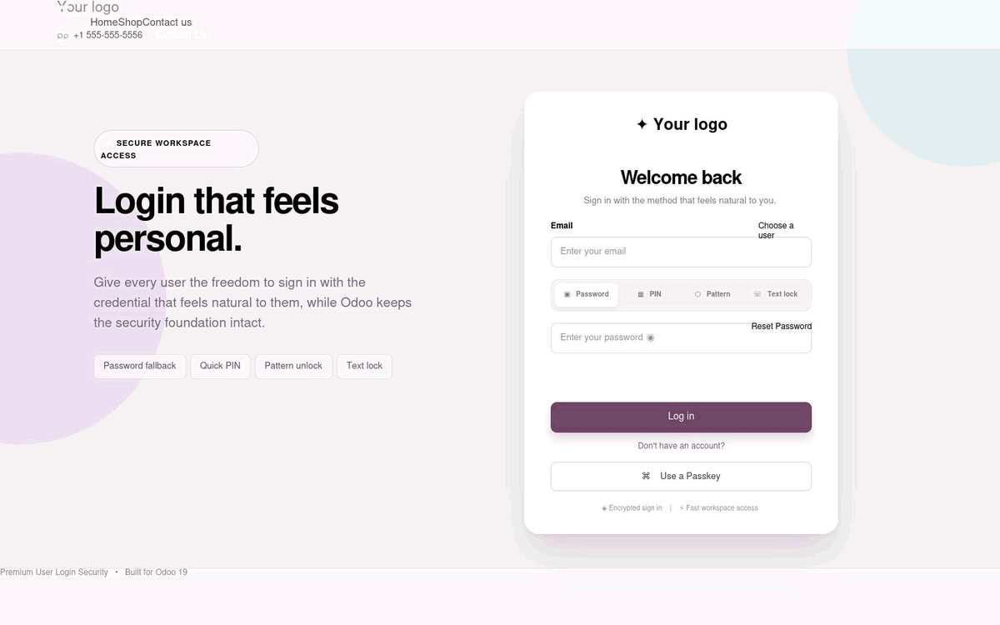
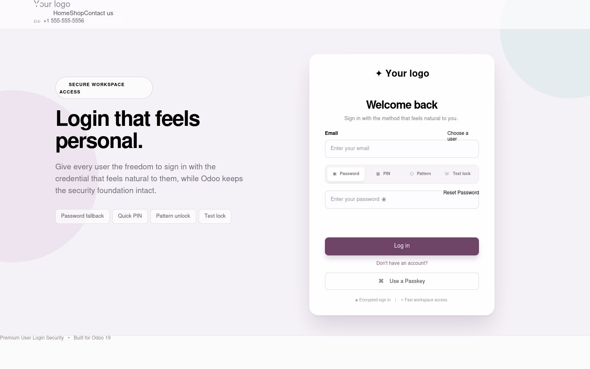
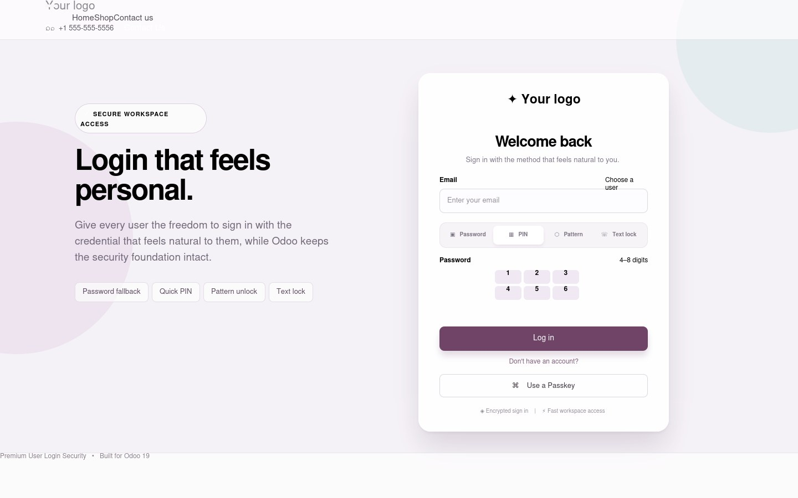
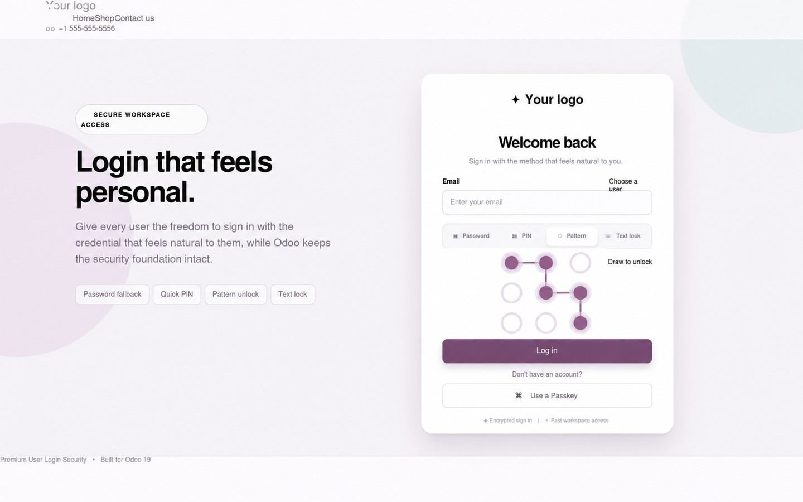
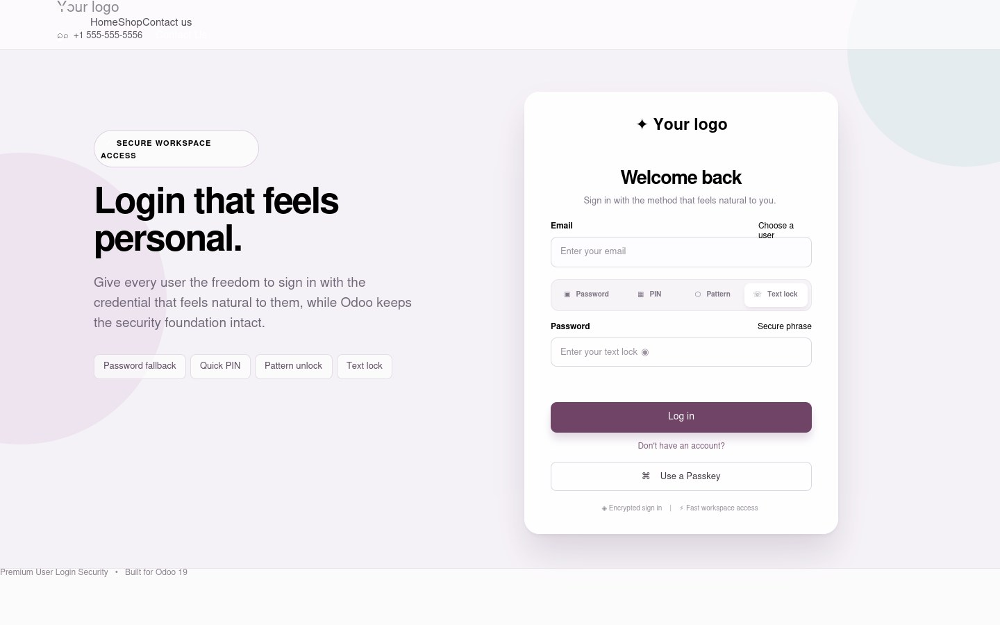
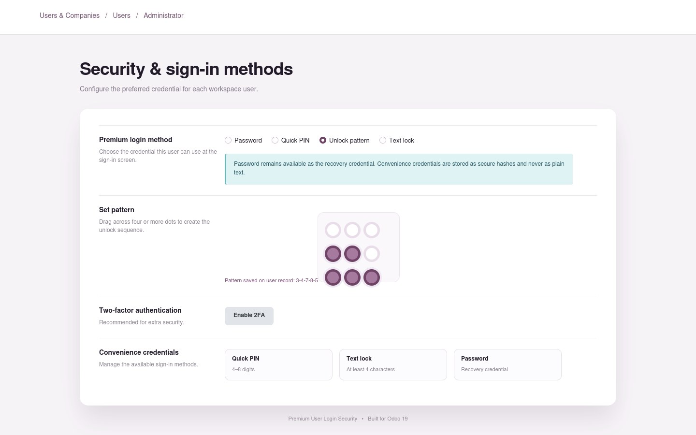

🔒 User Choice Let each user select the sign-in method that feels natural. |
◎ Phone-like Pattern Draw across a clean 3 × 3 grid with automatic midpoint handling. |
✓ Secure Convenience PINs, patterns, and text locks are never stored as plain text. |
⚡ Fast Access A responsive, premium login experience for desktop and mobile. |
Premium User Login Security enhances the standard Odoo login page with a polished authentication selector and per-user convenience credentials. Administrators choose the allowed method from the user's Security tab, and the login screen enforces that choice server-side.
Users can switch the visual method selector on the login screen. Only the method configured for that user can successfully authenticate.
Password The familiar Odoo credential and the reliable recovery option for every user. |  |
 | Quick PIN A fast 4–8 digit convenience credential for users who want a quicker unlock flow. |
Unlock pattern Draw across a smartphone-style 3 × 3 dot grid. Patterns require at least four points and support midpoint inclusion. |  |
 | Text lock A memorable phrase-based option for users who prefer words over digits. |
PIN, pattern, and text-lock values are hashed using Odoo's configured password hashing context. The plain credential is not stored in the database. Server-side verification The selected method is checked by Odoo authentication logic, not trusted from the browser tab alone. |  |
1 | Install the module. Add the addon to your Odoo 19 addons path and install it from Apps. |
2 | Open a user record. Go to the user's Security tab and select the Premium login method. |
3 | Set the convenience credential. Enter a valid PIN, draw at least four pattern points, or enter a text lock. |
4 | Save and refresh. Save the user, open the login page, and choose the configured method. |
Compatibility Designed for Odoo 19 with the standard Web module. |
Minimal dependency Depends on Odoo's Web module and integrates with standard user authentication. |
Maintainable Responsive SCSS, lightweight browser logic, and clear administrator setup. |